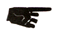

|
DOGMA III - HISTORY #2, "COSMOGONY"
which is not the same as DOGMA I - METAPHYSICS #2, "COSMOLOGY" (Book of Uterus)
In the beginning there was VOID, who had two daughters; one (the smaller) was that of BEING, named ERIS, and one (the larger) was of NON-BEING, named ANERIS. (To this day, the fundamental truth that Aneris is the larger is apparent to all who compare the great number of things that do not exist with the comparatively small number of things that do exist.)
Eris had been born pregnant, and after 55 years (Goddesses have an unusually long gestation period-- longer even than elephants), Her pregnancy bore the fruits of many things. These things were composed of the Five Basic Elements, SWEET, BOOM, PUNGENT, PRICKLE, and ORANGE. Aneris, however, had been created sterile. When she saw Eris enjoying Herself so greatly with all of the existent things She had borne, Aneris became jealous and finally one day she stole some existent things and changed them into non- existent things and claimed them as her own children. This deeply hurt Eris, who felt that Her sister was unjust (being so much larger anyway) to deny Her her small joy. And so She made herself swell again to bear more things. And She swore that no matter how many of her begotten that Aneris would steal, She would beget more. And, in return, Aneris swore that no matter how many existent things Eris brought forth, she would eventually find them and turn them into non-existent things for her own. (And to this day, things appear and disappear in this very manner.)
|